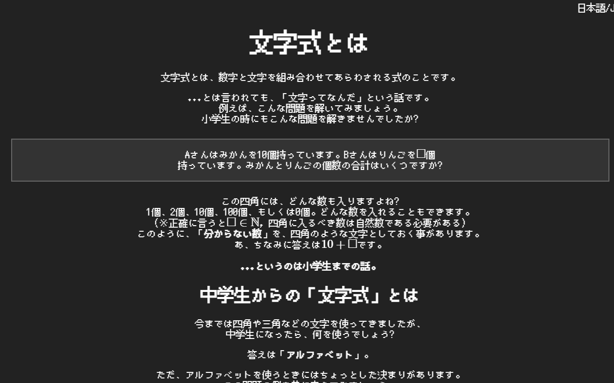

GETTING FASTER AND FASTER→→→→
Swap Factor!について
中学生になると、方程式、因数分解といった、重要単元であるが苦手になりやすいものが出てきます。
高校生になると、それを最大限応用する必要があるがゆえに、スピード感が必要になります。
よって苦手になりやすい単元となってしまします。しかし、慣れればいいのです。
方程式や因数分解は、「あるルール」に従って解けばいいのです。
楽しみ学ぶ
中学生になって苦手になりやすい単元である方程式や因数分解をゲーム感覚で楽しみながら
できるのが「Swap Factor!」です。
メインゲームでは画面にでてくる方程式が書かれたブロックを引っ張ると
解が飛びます。それを上部にある虹色の線に入れて「エネルギー」を
貯めましょう。くれぐれも、[CAUTION NUMBER]に書かれている数を
飛ばさないようにしてくださいね。
このように、このゲームは正確に方程式を解く力と方程式を素早く解く力を
鍛えることができます。
Swap Factorの魅力
その1. 世界と競い合うことができる
インターネットにつなぐことで、世界中に自分の記録を配信することができます。
高順位を目指して方程式をマスターしていきましょう！
その2. 数学力を上げるためのレッスン
数学が何もわからなくても中1レベルからしっかり解説。
- 文字式とそのルール
- 方程式とはそもそも何か
- 方程式の解き方
- 因数分解のやり方と方程式に対する活用
など、ゲームで使う知識や能力はもちろん、
など、ゲームには関係ないが高校生になっても通用する知識も
学ぶことができます。さらにこのレッスンもやる気がある方向けに
発展した内容も載せています。是非ご利用ください。

その3. 因数分解のトレーニング
このゲームは方程式を飛ばすだけのゲームではありません。
ひたすらに因数分解をして、因数分解をマスターするためのゲームモードもあります。
さあ、高めあおう。
インストールはこちらから
※まだリリースされていません。もうしばらくお待ちください。